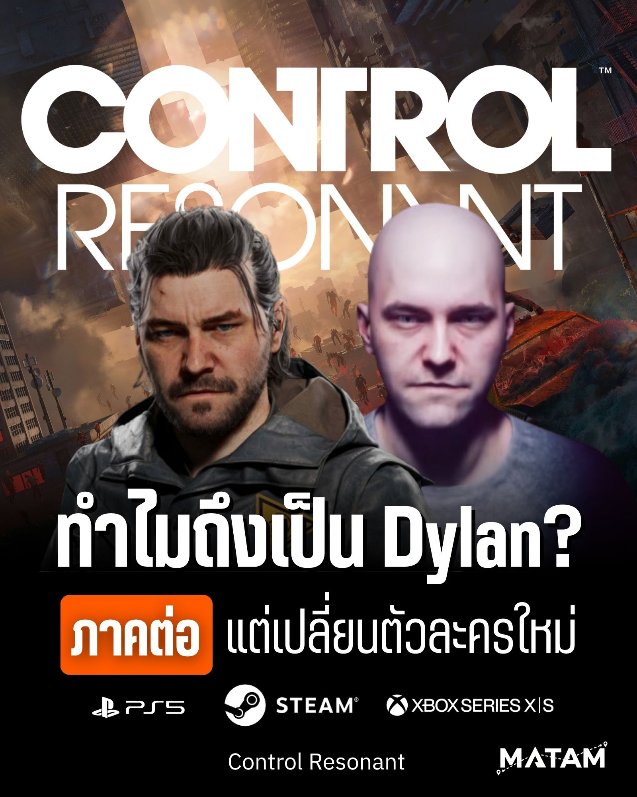
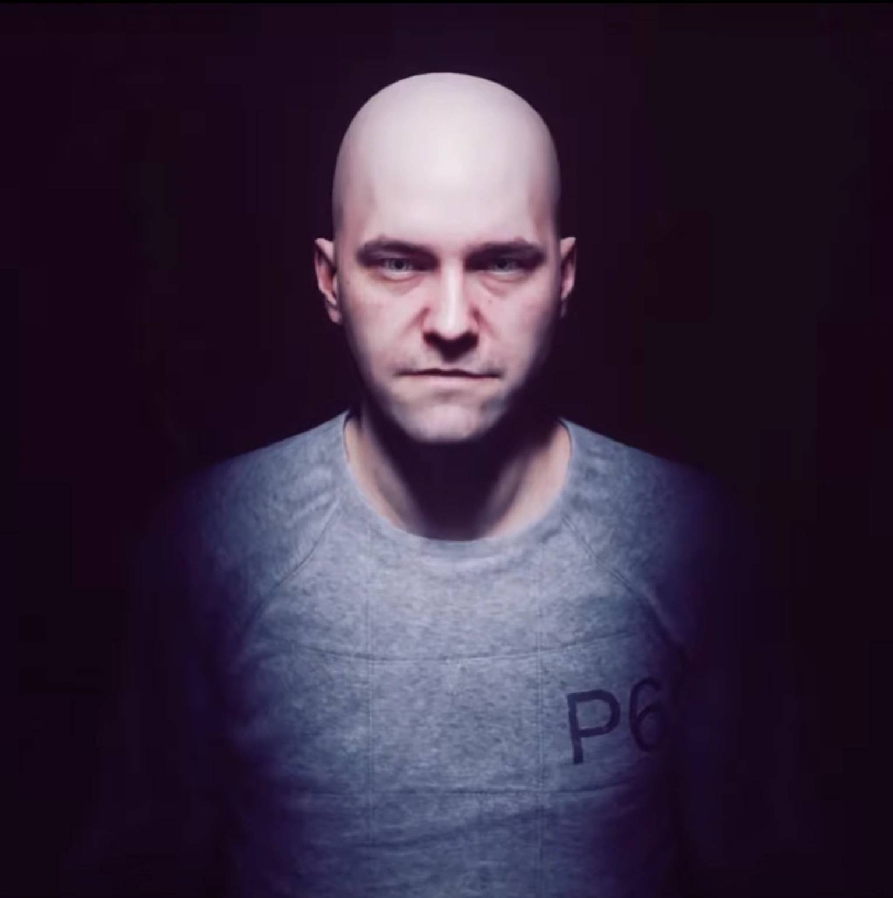

ทำไมถึงเป็น Dylan?
เอาจริงๆ ตอนแรกตั้มเองก็สงสัยนะ เป็นภาคต่อโดยตรงแต่ทำไมถึงเปลี่ยนตัวเอก เพราะดูจากที่ผ่านมา Dylan แทบจะเป็นเพียงตัวร้ายที่โดนขังอยู่แต่ในที่มืดมิดเท่านั้น
ตั้มเลยมาลองคิดๆ ดูถึงเหตุผลทำไมกันน๊าทีม Remedy ถึงกล้าที่จะเปลี่ยนตัวละครใน Control Resonant ทั้งที่ Jesse กำลังไปได้สวยในฐานะ ผอ.คนใหม่ของ FBC และพอมานั่งคิดดูถึงเรื่องราวทั้งหมด บอกเลยว่าทึ่งในความคิดของทีมนี้จริงๆ
นี่คือเหตุผล 6 ข้อที่ทำให้เราเข้าใจว่า ทำไมไม้ต่อของภาคนี้ถึงตกมาอยู่ในมือ Dylan

1. Dylan ถูกวางตัวไว้เป็น ผอ.คนต่อไปของ FBC
ถ้าเราย้อนกลับไปดูปูมหลังสมัยเด็กที่เมือง Ordinary ทาง Federal Bureau of Control (FBC) ไม่ได้จับ Dylan มาขังเฉยๆ แต่เพราะเขาถูกจัดให้อยู่ในสถานะผู้ที่มีพลังในการใช้ Objects of Power จนมีมีสิทธิ์ก้าวขึ้นเป็น ผอ. ขององค์กรได้อย่างสบายๆ
แต่ไม่มีใครหยั่งรู้พลังอำนาจของ Objects of Power จนทำให้ Dylan ถูกภัยอันตรายที่คาดไม่ถึงอย่าง Hiss เข้าครอบงำและถูกใช้เป็นเครื่องมือก่อความวุ่นวายใน The Oldest House เสียก่อน การที่เขาถูกช่วยเหลือจากพี่สาวจนกลับมามีบทบาทสำคัญในภาค Control Resonant จึงไม่ใช่เรื่องบังเอิญ แต่เป็นการคืนตำแหน่งหน้าที่สำคัญที่เขาควรจะได้รับมันต่างหาก
2. Remedy วางหมากเรื่องนี้มาตั้งแต่ภาคแรก
ค่ายนี้ขึ้นชื่อเรื่อง Lore ให้คนเล่นปวดหัวอยู่แล้วครับ พวกเขาไม่ได้คิดเนื้อเรื่องแบบขอไปที แต่ Remedy ปูเรื่องของ Dylan ไว้ละเอียดยิบมาตั้งแต่เกม Control ภาคแรก ไล่มาจนถึง DLC The Lake House ของเกม Alan Wake 2 ที่เผยภาพเขาฟื้นขึ้นมาจากอาการโคม่าในศูนย์วิจัยของ FBC
ทุกอย่างถูกร้อยเรียงมาเป็นอย่างดี การที่เขาตื่นขึ้นมาไม่ใช่เรื่องบังเอิญ แต่มันคือวางโครงสร้างสู่โปรเจกต์ใหญ่อย่าง Control Resonant ที่วางแผนเอาไว้ล่วงหน้าทั้งหมดแล้ว

3. ยกระดับเกมเพลย์ใหม่หมด
ในแง่ของการพัฒนาเกม การเปลี่ยนตัวเอกเท่ากับได้ยกเครื่องระบบการต่อสู้ใหม่ทั้งหมด ถ้าเราจำกันได้ในภาคแรก Jesse จะเน้นการสู้แบบคุมระยะด้วยพลังจิต การลอยตัวกลางอากาศ และการใช้ปืน Service Weapon
แต่สำหรับ Dylan สไตล์การสู้จะเปลี่ยนไปอย่างสิ้นเชิง เน้นแอ็กชันที่ดุดัน ระยะประชิดที่รวดเร็ว พร้อมทั้งความคล่องตัวสูง การเปลี่ยนตัวเอกในครั้งนี้เลยทำให้ตัวเกมเพลย์มีความสดใหม่ ไม่ใช่แค่การเอาเกมเก่ามาเปลี่ยนฉากหลังเฉยๆ แต่คือการเปิดประสบการณ์การเล่นแบบใหม่เรียกได้ว่าแทบจะเป็นเกมใหม่ทั้งหมด
4. ดราม่าที่ลึกซึ้งขึ้นกว่าเดิม
ลองคิดภาพตามดูสิครับ คนที่โดนกักขังในห้องมืดมาเกือบทั้งชีวิต สมองโดนครอบงำด้วยเอเลี่ยนต่างมิติอย่าง Hiss แถมในหัวฉายภาพซ้ำไปซ้ำมาจนแยกไม่ออกว่าไหนเรื่องจริงไหนเรื่องเท็จ สิ่งเหล่านี้ทำให้มุมมองความคิดของ Dylan มีความซับซ้อน และจิตตกกว่าผู้เป็นพี่อย่าง Jesse แบบเทียบกันไม่ติด
การที่เราจะได้สวมบทบาทเป็นตัวละครที่มีสภาวะจิตใจเปราะบางแต่ทรงพลังขนาดนี้ จะทำให้การเสพเนื้อเรื่องและการตัดสินใจต่างๆ ในเกมมีความกดดันและน่าติดตามมากขึ้นไปอีกไม่รู้กี่เท่า
5. ภารกิจใหม่และการต่อยอดจักรวาล
การกลับมาของ Dylan ไม่ได้จำกัดอยู่แค่เรื่องดราม่าในครอบครัว Faden ครับ แต่ตัวตนของเขากำลังจะกลายเป็น "กุญแจสำคัญ" ที่เชื่อมโยงความพินาศรอบด้านเข้าด้วยกัน ทั้งภัยคุกคามเหนือธรรมชาติระลอกใหม่ที่กำลังกัดกิน The Oldest House และมิติมืดที่กำลังทะลักเข้ามาปะทะกับโลกภายนอก บอกเลยว่าใครที่เป็นสายเสพ Lore และชอบมโนจักรวาล Remedy จะได้ทั้งปวดหัวและฟินไปพร้อมๆ กันแน่นอน
6. สรุปคือ Remedy ไม่ได้เปลี่ยนตัวเอกตามใจชอบ
กล่าวคือ Remedy ไม่ได้เปลี่ยนตัวเอกตามอำเภอใจหรือคิดสดหน้างาน แต่เป็นการวางแผนมาตั้งแต่ปี 2010 (เชี่ย!!! ล้ำลึกจัด) แถมงานนี้ยังแอบทิ้งปมและเบาะแสเชื่อมโยงไปถึงอนาคตของ Alan Wake 3 ไว้อีกต่างหาก
จิตใจพวกพรี่ๆ ทำด้วยอะไรกันครับเนี่ย? ทั้งงานภาพสุดหลอน ระบบการเล่นที่ปรับแต่งให้มันส์สะใจขึ้น และเนื้อเรื่องที่ซับซ้อนซ่อนเงื่อนแต่ชวนติดตามเป็นบ้า ใครเป็นแฟนคลับค่ายนี้บอกเลยว่าเตรียมตัวตับพังและสมองไหลกันได้เลยครับ